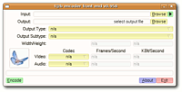

grafische Oberflächen
Archivierte Anleitung
Dieser Artikel wurde archiviert, da er - oder Teile daraus - nur noch unter einer älteren Ubuntu-Version nutzbar ist. Diese Anleitung wird vom Wiki-Team weder auf Richtigkeit überprüft noch anderweitig gepflegt. Zusätzlich wurde der Artikel für weitere Änderungen gesperrt.
Anmerkung: Aktuellere Programme sind im Artikel Videodateien umwandeln zu finden.
Zum Verständnis dieses Artikels sind folgende Seiten hilfreich:
Es gibt mehrere Programme mit einer grafischen Oberfläche, die zur Videobearbeitung jedoch alle auf die Funktionen von MEncoder zurückgreifen. Teilweise hat man auch direkt im Programm die Möglichkeit, die entsprechende Kommandozeile für die Verarbeitung mit MEncoder zu sehen und zu bearbeiten.
KVideoEncoder¶
KVideoEncoder  ist ein KDE-Programm mit einer einfachen grafischen Oberfläche, die auch in deutscher Sprache verfügbar ist. Es setzt allerdings KDE 3.0.x voraus und kann nicht auf KDE 4 installiert werden. Um das Programm kompilieren zu können, müssen folgende Pakete installiert [1] sein:
ist ein KDE-Programm mit einer einfachen grafischen Oberfläche, die auch in deutscher Sprache verfügbar ist. Es setzt allerdings KDE 3.0.x voraus und kann nicht auf KDE 4 installiert werden. Um das Programm kompilieren zu können, müssen folgende Pakete installiert [1] sein:
kde-devel (universe) - enthält viele Abhängigkeiten
Nun lädt man zunächst die neueste Version von KVideoEncoder von der Downloadseite  herunter und entpackt [3] das Programm in sein Homeverzeichnis.
herunter und entpackt [3] das Programm in sein Homeverzeichnis.
Hinweis!
Fremdsoftware kann das System gefährden.
Anschließend öffnet man ein Terminal [2] und wechselt in den soeben entpackten Ordner. Nun kompiliert [4] man das Programm. Dabei ist es wichtig, dass man beim Befehl ./configure die folgende Option angibt:
./configure --with-kde-includes=/usr/include/kde
Wenn alles klappt, befindet sich unter GNOME ein Eintrag im Menü, und zwar unter "Anwendungen -> Unterhaltungsmedien -> KVideoEncoder". Unter KDE kann das Programm mit dem Aufruf von "kvideoencoder" [5] starten.
Nach dem ersten Start muss man die Sprache noch auf Deutsch umstellen. Hierzu wählt man im Menü des Programms "Language -> Deutsch" aus. Damit die Änderung wirksam wird, muss das Programm neu gestartet werden.
jMencode¶
jMencode ist ein Programm, dass in Java geschrieben ist. Daher muss zur Benutzung natürlich Java - mindestens in Version 5 - installiert sein. Außerdem wird der MPlayer benötigt. Das Programm kann von der Downloadseite heruntergeladen werden. Hier wählt man die Version "Platform-Independent .jar", also nicht die Version mit den Quellpaketen.
Hinweis!
Fremdsoftware kann das System gefährden.
Zum Entpacken [3] legt man sich zunächst einen Ordner im Homeverzeichnis an, da das Paket viele Einzeldateien enthält. Nun kann man das Programm aus dem Ordner heraus mit dem Befehl
java -jar JMEncode.jar
aufrufen.
T@bencode¶
 T@bencode (mittlerweile auch t@b Media Converter genannt) ist eine grafische Oberfläche für Mencoder und SoX, mit der man auf einfache Weise Videodateien umwandeln kann. Die neueste Version des Programms kann von der Homepage heruntergeladen werden (hier die Version "ubuntu32-flavour" wählen).
Hinweis!
Fremdsoftware kann das System gefährden.
Anschließend entpackt man die Datei in ein beliebiges Verzeichnis, auf das man ausreichende Zugriffsrechte als normaler Benutzer hat. Hierbei wird der Ordner filez erstellt. Das Programm startet man einfach durch Anklicken der Datei /filez/tabencode.
 Programmübersicht
Programmübersicht- Erstellt mit Inyoka
-
 2004 – 2017 ubuntuusers.de • Einige Rechte vorbehalten
2004 – 2017 ubuntuusers.de • Einige Rechte vorbehalten
Lizenz • Kontakt • Datenschutz • Impressum • Serverstatus -
Serverhousing gespendet von